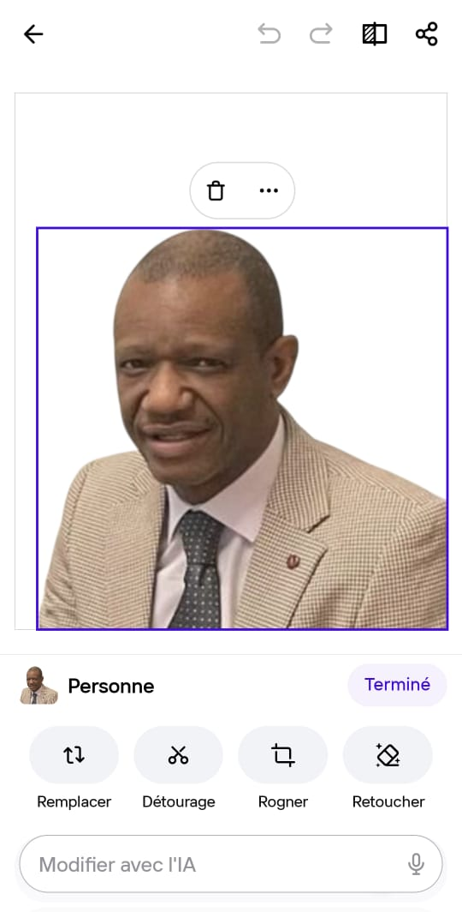

Bienvenue en Côte d'IvoireWelcome to Côte d'IvoireWillkommen in der Côte d'Ivoire
« Akwaba » — Bienvenue en Baoulé, langue du peuple Akan« Akwaba » — Welcome in Baoulé, language of the Akan people« Akwaba » — Willkommen auf Baoulé, Sprache des Akan-Volkes
Depuis 20 ans, l'AICDI forme et accompagne les diplomates, coopérants et fonctionnaires internationaux dans l'exercice de leur mission. Nos clients comptent parmi eux le Ministère Allemand de la Coopération, le Ministère des Affaires Étrangères allemand et l'Institut Goethe.For 20 years, AICDI has been training and supporting diplomats, development workers and international civil servants. Our clients include the German Federal Ministry for Economic Cooperation, the German Federal Foreign Office and the Goethe-Institut.Seit 20 Jahren bildet AICDI Diplomaten, Entwicklungshelfer und internationale Beamte aus. Zu unseren Kunden zählen das Bundesministerium für wirtschaftliche Zusammenarbeit, das Auswärtige Amt und das Goethe-Institut.
Publics concernésTarget audiencesZielgruppen
Personnels en poste ou en préparation de missionStaff posted or preparing for missionPersonal im Einsatz oder Missionsvorbereitung
ONU, Banque Mondiale, UE, UA et agences affiliéesUN, World Bank, EU, AU and affiliated agenciesUN, Weltbank, EU, AU und angegliederte Organisationen
Équipes de terrain et responsables de programmesField teams and programme managersFeldteams und Programmverantwortliche
Cadres en mobilité internationale vers la Côte d'IvoireExecutives on international mobility to Côte d'IvoireFührungskräfte mit internationalem Einsatz
Test gratuit · 3 minutes · Résultat immédiat Free test · 3 minutes · Immediate result Kostenloser Test · 3 Minuten · Sofortergebnis
10 questions · Score personnalisé · Recommandation de formation adaptée à votre profil 10 questions · Personalised score · Training recommendation adapted to your profile 10 Fragen · Persönliches Ergebnis · Schulungsempfehlung für Ihr Profil
Gratuit · Sans inscription Free · No registration Kostenlos · Ohne Anmeldung
Test gratuit · 3 minutes · Résultat immédiat Free test · 3 minutes · Immediate result Kostenloser Test · 3 Minuten · Sofortergebnis
10 questions · Score personnalisé · Recommandation de formation adaptée à votre profil 10 questions · Personalised score · Training recommendation adapted to your profile 10 Fragen · Persönliches Ergebnis · Schulungsempfehlung für Ihr Profil
Gratuit · Sans inscription Free · No registration Kostenlos · Ohne Anmeldung
Nos interventions réellesOur real interventionsUnsere realen Einsätze
Des formations concrètes, des professionnels réels, des résultats mesurables. Voici ce que nous faisons exactement pour nos clients institutionnels.Concrete training, real professionals, measurable results. Here is exactly what we do for our institutional clients.Konkrete Schulungen, echte Fachleute, messbare Ergebnisse. Hier ist genau, was wir für unsere institutionellen Kunden tun.
Depuis plus de 20 ans, l'AICDI prépare les diplomates, coopérants et fonctionnaires internationaux à exercer leur mission en Côte d'Ivoire et en Afrique de l'Ouest. Voici des exemples concrets de nos interventions. For over 20 years, Franck Albert Vanié has been preparing diplomats, development workers and international civil servants to carry out their missions in Côte d'Ivoire and West Africa. Here are concrete examples of our interventions. Seit mehr als 20 Jahren bereitet AICDI Diplomaten, Entwicklungshelfer und internationale Beamte auf ihre Missionen in der Côte d'Ivoire und Westafrika vor. Hier sind konkrete Beispiele unserer Einsätze.
Concrètement, nous faisons quoi ?Concretely, what do we do?Konkret, was tun wir?
Nous concevons un programme sur mesure selon le profil du participant, son institution et son poste. Analyse pays complète, briefing politique & économique, codes culturels, acteurs clés. Format présentiel 3 jours ou visio 5 sessions.We design a tailored programme based on the participant's profile, institution and position. Full country analysis, political & economic briefing, cultural codes, key actors. 3-day or 5-session video format.Maßgeschneidertes Programm nach Profil, Institution und Stelle. Vollständige Länderanalyse, politisches Briefing, Kulturcodes, Hauptakteure. 3-tägig vor Ort oder 5 Videokonferenzsitzungen.
Immersion et orientation dans le contexte réel ivoirien. Rencontres avec acteurs locaux, visite institutionnelle, décryptage des réseaux d'influence, adaptation à la vie quotidienne à Abidjan pour le professionnel et sa famille.Immersion and orientation in the real Ivorian context. Meetings with local actors, institutional visits, decoding influence networks, adaptation to daily life in Abidjan for the professional and their family.Immersion und Orientierung im realen ivorischen Kontext. Treffen mit lokalen Akteuren, institutionelle Besuche, Entschlüsselung von Einflussnetzwerken.
Modules thématiques ciblés : négociation avec les institutions ivoiriennes, gestion des défis interculturels, renforcement des compétences sur un sujet précis. Format demi-journée ou sur mesure selon les besoins opérationnels.Targeted thematic modules: negotiation with Ivorian institutions, managing intercultural challenges, strengthening competences on a specific topic. Half-day or tailored format.Gezielte thematische Module: Verhandlung mit ivorischen Institutionen, interkulturelle Herausforderungen, Kompetenzstärkung. Halbtagsformat oder maßgeschneidert.
Parce que le terrain réserve toujours des surprises, Franck Albert Vanié reste disponible après la formation pour répondre à toute situation inédite rencontrée en mission — blocage institutionnel, négociation délicate, question protocolaire urgente. 20 ans d'expérience terrain à Abidjan, disponible par email, téléphone ou visioconférence.Because the field always holds surprises, Franck Albert Vanié remains available after training for any unexpected situation — institutional deadlock, delicate negotiation, urgent protocol question. 20 years of field experience in Abidjan, available by email, phone or video call.Da das Feld immer Überraschungen bereithält, steht Franck Albert Vanié nach der Schulung für jede unerwartete Situation zur Verfügung. 20 Jahre Felderfahrung in Abidjan, erreichbar per E-Mail, Telefon oder Videoanruf.
✓ Email · Téléphone · Visioconférence✓ Email · Phone · Video call✓ E-Mail · Telefon · Videoanruf
Ce que vous apprendrez concrètementWhat you will concretely learnWas Sie konkret lernen werden
Chaque exemple ci-dessous est tiré de situations réelles vécues en Côte d'Ivoire. Ce sont ces détails qui font la différence entre une mission réussie et un échec coûteux.Each example below is drawn from real situations experienced in Côte d'Ivoire. These are the details that make the difference between a successful mission and a costly failure.Jedes Beispiel unten stammt aus realen Situationen in der Côte d'Ivoire. Das sind die Details, die den Unterschied zwischen einer erfolgreichen Mission und einem kostspieligen Scheitern ausmachen.
Alignement stratégique Strategic alignment Strategische Ausrichtung
Catalogue des formations 2026-2028Training catalogue 2024-2025Schulungskatalog 2024-2025
L'AICDI vous prépare et vous outille afin d'acquérir les compétences en négociation internationale et interculturelle essentielles pour réussir à l'étranger — avant votre départ, à votre arrivée, ou en cours de mission.AICDI prepares and equips you with the international and intercultural negotiation skills essential for success abroad — before departure, upon arrival, or during your mission.Franck Albert Vanié bereitet Sie auf die internationalen und interkulturellen Verhandlungskompetenzen vor — vor der Abreise, bei der Ankunft oder während Ihrer Mission.
Ils nous font confianceThey trust usSie vertrauen uns
📄 Télécharger notre catalogue de formations📄 Download our training catalogue📄 Schulungskatalog herunterladen
Catalogue AICDI 2024-2025 · PDF · Tous nos programmes en détailAICDI Catalogue 2024-2025 · PDF · All our programmes in detailAICDI-Katalog 2024-2025 · PDF · Alle Programme im Detail
Vue d'ensembleCurriculum overviewProgrammüberblick
Trois jours pour maîtriser les dimensions essentielles de la Côte d'Ivoire contemporaine.Three days to master the essential dimensions of contemporary Côte d'Ivoire.Drei Tage, um die wesentlichen Dimensionen zu meistern.
5 programmes conçus pour couvrir chaque étape de votre mobilité internationale — avant le départ, à l'arrivée et en cours de mission. Chaque programme est adapté à votre profil, votre institution et votre poste. 5 programmes designed to cover every stage of your international mobility — before departure, on arrival and during the mission. Each programme is tailored to your profile, institution and position. 5 Programme für jede Phase Ihrer internationalen Mobilität — vor der Abreise, bei der Ankunft und während der Mission. Jedes Programm ist auf Ihr Profil, Ihre Institution und Ihre Stelle zugeschnitten.
Pré-départPre-departureVor der Abreise
Analyse approfondie historique, politique, économique, socio-environnementale et culturelle du pays de destination. Permet un haut degré d'anticipation et d'intégration professionnelle et personnelle. In-depth historical, political, economic, socio-environmental and cultural analysis of the destination country. Enables a high degree of anticipation and professional and personal integration. Eingehende historische, politische, wirtschaftliche, sozio-ökologische und kulturelle Analyse des Ziellandes. Ermöglicht ein hohes Maß an Antizipation und professioneller sowie persönlicher Integration.
Pour les membres de bureaux, missions et délégations régionales. Connaissances transversales entre pays voisins, analyse et anticipation des événements politiques, économiques et sécuritaires de la région. For members of regional offices, missions and delegations. Cross-country knowledge between neighbouring countries, analysis and anticipation of political, economic and security events in the region. Für Mitglieder regionaler Büros, Missionen und Delegationen. Länderübergreifende Kenntnisse zwischen Nachbarländern, Analyse und Antizipation politischer, wirtschaftlicher und sicherheitsbezogener Ereignisse.
Post-arrivéePost-arrivalNach der Ankunft
Pour les expatriés déjà sur place ou sur le point de partir. Met l'accent sur le développement personnel, interpersonnel et les compétences interculturelles dans le contexte professionnel et social spécifique au pays hôte. Peut inclure la famille ou le conjoint. For expatriates already on site or about to leave. Focuses on personal, interpersonal development and intercultural competences in the specific professional and social context of the host country. Can include family or partner. Für Expatriates, die bereits vor Ort sind oder bald abreisen. Schwerpunkt auf persönlicher, zwischenmenschlicher Entwicklung und interkulturellen Kompetenzen. Kann Familie oder Partner einschließen.
SpécialisationsSpecialisationsSpezialisierungen
Compétences en négociation internationale et interculturelle avec les États, gouvernements, agences étatiques et partenaires au développement. Simulations et mises en situation réelles. International and intercultural negotiation skills with States, governments, state agencies and development partners. Simulations and real-life situations. Internationale und interkulturelle Verhandlungskompetenzen mit Staaten, Regierungen, staatlichen Behörden und Entwicklungspartnern. Simulationen und realitätsnahe Situationen.
Simulation des chocs interculturels, analyse des aprioris et préjugés pour renforcer l'efficacité interculturelle. Compétences internationales et nationales pour opérer en contexte multiculturel. Simulation of intercultural shocks, analysis of preconceptions and prejudices to strengthen intercultural effectiveness. International and national competences for operating in a multicultural context. Simulation interkultureller Schocks, Analyse von Vorurteilen und Voreingenommenheiten zur Stärkung der interkulturellen Wirksamkeit. Internationale und nationale Kompetenzen für den Einsatz in multikulturellen Kontexten.
Jour 1 · ModuleDay 1 · ModuleTag 1 · Modul
Les fondements historiques et le paysage politique pour une compréhension profonde de la Côte d'Ivoire contemporaine.Historical foundations and political landscape for a deep understanding of contemporary Côte d'Ivoire.Historische Grundlagen und politische Landschaft für ein tiefes Verständnis.
Objectifs du programme
Développer une compréhension et une empathie pour la culture du pays ou de la région cible
Identifier les institutions et groupes de personnes importants
Gérer les situations interculturelles significatives dans le pays ou la région cible
Acquérir une confiance comportementale en révisant sa compréhension des rôles et valeurs
Jour 2 · ModulesDay 2 · ModulesTag 2 · Module
Les piliers économiques et sociaux structurant la Côte d'Ivoire contemporaine.The economic and social pillars structuring contemporary Côte d'Ivoire.Die wirtschaftlichen und sozialen Grundlagen der modernen Côte d'Ivoire.
Jour 3 · ModulesDay 3 · ModulesTag 3 · Module
Les dimensions opérationnelles pour agir efficacement sur le terrain ivoirien.Operational dimensions for acting effectively in the Ivorian field.Operative Dimensionen für einen effektiven Einsatz vor Ort.
Méthodologie pédagogique
Formation expérimentale — simulation de situations de vie réelle
Formation individuelle ou en petits groupes — cas pratiques & travail d'équipe
Évaluation formelle à la fin — rapport personnalisé remis à chaque participant
Module spécialSpecial moduleSondermodul
Les clés pour négocier avec efficacité selon les groupes ethniques et culturels ivoiriens.The keys to negotiating effectively according to Ivorian ethnic and cultural groups.Die Schlüssel zur effektiven Verhandlung im ivorischen Kontext.
Bonus
La dimension culturelle, sportive et touristique pour une immersion complète.The cultural, sporting and touristic dimension for complete immersion.Die kulturelle, sportliche und touristische Dimension.
Votre formateurYour trainerIhr Trainer

Expert en coopération internationaleInternational cooperation expertExperte für internationale Zusammenarbeit
Basé en Allemagne, Franck Albert Vanié est le fondateur de l'AICDI — Académie Ivoirienne pour la Coopération et le Développement International. Depuis près de 20 ans, il forme et accompagne les diplomates, coopérants et fonctionnaires internationaux dans l'exercice de leur mission en Côte d'Ivoire et en Afrique de l'Ouest. Ses clients comptent parmi eux le Ministère Allemand de la Coopération, le Ministère des Affaires Étrangères allemand, l'Institut Goethe et d'autres institutions européennes de renom. Il adapte chaque formation aux réalités spécifiques du contexte interculturel et multiculturel ivoirien.Based in Germany, Franck Albert Vanié is the founder of AICDI — the Ivorian Academy for International Cooperation and Development. For nearly 20 years, he has been training and supporting diplomats, development workers and international civil servants in their missions in Côte d'Ivoire and West Africa. His clients include the German Federal Ministry for Economic Cooperation, the German Federal Foreign Office, the Goethe-Institut and other leading European institutions.Mit Sitz in Deutschland ist Franck Albert Vanié Gründer der AICDI. Seit fast 20 Jahren bildet er Diplomaten und internationale Beamte aus. Zu seinen Kunden zählen das Bundesministerium für wirtschaftliche Zusammenarbeit, das Auswärtige Amt und das Goethe-Institut.
Demande de formationTraining enquirySchulungsanfrage
Remplissez le formulaire et nous vous répondrons dans les 24 heures ouvrées pour discuter de votre projet de formation et vous soumettre une proposition personnalisée.Complete the form and we will respond within 24 business hours to discuss your training project and submit a personalised proposal.Füllen Sie das Formular aus und wir melden uns innerhalb von 24 Arbeitsstunden mit einem personalisierten Angebot.
InvestissementInvestmentInvestition
Des formations limitées à 10 participants pour garantir la qualité des échanges et la personnalisation du programme.Trainings limited to 10 participants to guarantee the quality of exchanges and programme customisation.Schulungen auf 10 Teilnehmer begrenzt, um die Qualität der Diskussionen und die Programmindividualisierung zu gewährleisten.
Sessions limitées à 10 participants. Ce choix délibéré garantit des échanges approfondis, une adaptation au contexte de chaque participant et une qualité d'enseignement comparable aux standards des grandes institutions internationales. Sessions limited to 10 participants. This deliberate choice guarantees in-depth exchanges, adaptation to each participant's context and teaching quality comparable to the standards of major international institutions. Sitzungen auf 10 Teilnehmer begrenzt. Diese bewusste Entscheidung gewährleistet vertiefte Diskussionen, Anpassung an den Kontext jedes Teilnehmers und eine Unterrichtsqualität nach den Standards großer internationaler Institutionen.
* Tarifs hors taxes · Frais de déplacement en sus · Devis personnalisé sur demande * Fees excluding taxes · Travel expenses additional · Personalised quote on request * Preise zzgl. MwSt. · Reisekosten extra · Individuelles Angebot auf Anfrage
Toutes les présentations en PDF, bibliographie sélective et ressources complémentaires.All presentations in PDF, selective bibliography and additional resources.Alle Präsentationen als PDF, Auswahlbibliographie und zusätzliche Ressourcen.
Adaptation du programme au secteur et au contexte d'intervention de votre organisation.Programme adaptation to your organisation's sector and operational context.Programmanpassung an den Sektor und Einsatzkontext Ihrer Organisation.
Session de questions-réponses 30 jours après la formation.Q&A session 30 days after the training.Frage-und-Antwort-Sitzung 30 Tage nach der Schulung.
Nous vous répondons sous 24 heures ouvrées avec une proposition personnalisée. We respond within 24 business hours with a personalised proposal. Wir antworten innerhalb von 24 Arbeitsstunden mit einem personalisierten Angebot.
Impressum · Mentions légalesLegal noticeImpressum
Conformément au § 5 TMG (Telemediengesetz) allemand.In accordance with § 5 TMG (German Telemedia Act).Angaben gemäß § 5 TMG.
Angaben gemäß § 5 TMG
Haftungsausschluss · Limitation de responsabilitéDisclaimerHaftungsausschluss
Les contenus de ce site ont été créés avec le plus grand soin. Nous ne pouvons toutefois garantir l'exactitude, l'exhaustivité et l'actualité de ces contenus. En tant que prestataire de services, nous sommes responsables de nos propres contenus sur ces pages conformément à la législation générale. The contents of this website have been created with the greatest care. However, we cannot guarantee the accuracy, completeness and timeliness of the content. As a service provider, we are responsible for our own content on these pages in accordance with general legislation. Die Inhalte dieser Website wurden mit größter Sorgfalt erstellt. Für die Richtigkeit, Vollständigkeit und Aktualität der Inhalte können wir jedoch keine Gewähr übernehmen. Als Diensteanbieter sind wir für eigene Inhalte auf diesen Seiten nach den allgemeinen Gesetzen verantwortlich.
Urheberrecht · Droits d'auteurCopyrightUrheberrecht
Les contenus et œuvres créés par les opérateurs de ce site sont soumis au droit d'auteur allemand. © 2025 Franck Albert Vanié / Ivoire Consulting / AICDI. Tous droits réservés. The content and works created by the operators of these pages are subject to German copyright law. © 2025 Franck Albert Vanié / Ivoire Consulting / AICDI. All rights reserved. Die durch die Seitenbetreiber erstellten Inhalte und Werke auf diesen Seiten unterliegen dem deutschen Urheberrecht. © 2025 Franck Albert Vanié / Ivoire Consulting / AICDI. Alle Rechte vorbehalten.
Notre vision 2030Our vision 2030Unsere Vision 2030
Construire la plateforme de référence pour la préparation et l'accompagnement des mobilités professionnelles entre l'Europe et l'Afrique.Building the reference platform for the preparation and support of professional mobility between Europe and Africa.Aufbau der Referenzplattform für die Vorbereitung und Begleitung beruflicher Mobilität zwischen Europa und Afrika.
Le problèmeThe problemDas Problem
La solution AICDIThe AICDI solutionDie AICDI-Lösung
Phase actuelle · 2025Current phase · 2025Aktuelle Phase · 2025
Phase 2 · 2026Phase 2 · 2026Phase 2 · 2026
Vision 2030Vision 2030Vision 2030
Couverture géographiqueGeographic coverageGeografische Abdeckung
AICDI opère en Côte d'Ivoire et développe son réseau dans les zones UEMOA et CEMAC.AICDI operates in Côte d'Ivoire and is developing its network across the UEMOA and CEMAC zones.AICDI ist in der Côte d'Ivoire tätig und baut sein Netzwerk in den UEMOA- und CEMAC-Zonen aus.
Pays opérationnelOperational countryOperatives Land
Bureau Abidjan · Formateurs certifiés · 20 ans d'expérienceAbidjan office · Certified trainers · 20 years experienceBüro Abidjan · Zertifizierte Trainer · 20 Jahre Erfahrung
Documents contractuelsContractual documentsVertragsdokumente
Version 1.0 · En vigueur au 01.01.2025 · Applicables à toutes les prestations AICDI / Ivoire ConsultingVersion 1.0 · Effective 01.01.2025 · Applicable to all AICDI / Ivoire Consulting servicesVersion 1.0 · Gültig ab 01.01.2025 · Anwendbar auf alle Leistungen von AICDI / Ivoire Consulting
Les présentes Conditions Générales de Vente (CGV) régissent l'ensemble des prestations de formation, conseil et accompagnement fournies par Franck Albert Vanié / Ivoire Consulting / AICDI, Einzelunternehmen de droit allemand, dont le siège social est situé Burgackerweg 4, 79104 Freiburg im Breisgau, Deutschland (ci-après "le Prestataire"), à destination de tout client professionnel, institutionnel ou organisationnel (ci-après "le Client"). These General Terms and Conditions (GTC) govern all training, consulting and support services provided by Franck Albert Vanié / Ivoire Consulting / AICDI, a sole proprietorship under German law, with registered office at Burgackerweg 4, 79104 Freiburg im Breisgau, Germany (hereinafter "the Provider"), to any professional, institutional or organisational client (hereinafter "the Client"). Diese Allgemeinen Geschäftsbedingungen (AGB) regeln alle Schulungs-, Beratungs- und Begleitungsleistungen von Franck Albert Vanié / Ivoire Consulting / AICDI, Einzelunternehmen nach deutschem Recht, mit Sitz in Burgackerweg 4, 79104 Freiburg im Breisgau, Deutschland (nachfolgend "Auftragnehmer"), gegenüber jedem professionellen, institutionellen oder organisatorischen Kunden (nachfolgend "Auftraggeber").
Toute commande de prestation implique l'acceptation pleine et entière des présentes CGV. Ces CGV prévalent sur tout autre document du Client, sauf accord écrit préalable du Prestataire. Any order for services implies full and complete acceptance of these GTC. These GTC prevail over any other document from the Client, unless prior written agreement by the Provider. Jede Bestellung von Leistungen impliziert die vollständige Annahme dieser AGB. Diese AGB haben Vorrang vor allen anderen Dokumenten des Auftraggebers, sofern keine schriftliche Vereinbarung des Auftragnehmers vorliegt.
Le Prestataire propose les prestations suivantes : The Provider offers the following services: Der Auftragnehmer bietet folgende Leistungen an:
Toute prestation fait l'objet d'un devis écrit préalable, valable 30 jours à compter de sa date d'émission. La commande est ferme à réception du devis signé accompagné, le cas échéant, d'un bon de commande institutionnel. Le Prestataire se réserve le droit de refuser toute commande sans justification. All services are subject to a prior written quote, valid for 30 days from its date of issue. The order is firm upon receipt of the signed quote accompanied, where applicable, by an institutional purchase order. The Provider reserves the right to refuse any order without justification. Alle Leistungen werden durch ein vorheriges schriftliches Angebot bestätigt, das 30 Tage ab Ausstellungsdatum gültig ist. Die Bestellung ist verbindlich bei Eingang des unterzeichneten Angebots, ggf. begleitet von einer institutionellen Bestellung. Der Auftragnehmer behält sich das Recht vor, jede Bestellung ohne Begründung abzulehnen.
4.1 — Prix Hors Taxes (HT)4.1 — Prices Excluding Tax (net)4.1 — Preise zzgl. MwSt. (netto)
Tous les prix sont exprimés en euros (€) hors taxes (HT). La TVA applicable est déterminée selon la législation en vigueur au lieu de prestation.
All prices are expressed in euros (€) excluding tax (net). The applicable VAT is determined according to the legislation in force at the place of service.
Alle Preise verstehen sich in Euro (€) zuzüglich Mehrwertsteuer (netto). Die anwendbare Mehrwertsteuer richtet sich nach den am Leistungsort geltenden Rechtsvorschriften.
4.2 — Régime TVA international (B2B)4.2 — International VAT regime (B2B)4.2 — Internationales Mehrwertsteuerregime (B2B)
Pour les clients professionnels établis dans l'Union Européenne (hors Allemagne) : application du mécanisme d'autoliquidation (reverse charge) conformément à l'art. 196 de la Directive TVA 2006/112/CE — TVA 0% sur la facture. Pour les clients établis hors UE (Suisse, Japon, etc.) : prestation exonérée de TVA conformément au § 3a UStG — TVA 0%.
For professional clients established in the European Union (outside Germany): application of the reverse charge mechanism in accordance with Art. 196 of VAT Directive 2006/112/EC — 0% VAT on invoice. For clients established outside the EU (Switzerland, Japan, etc.): service exempt from VAT in accordance with § 3a UStG — 0% VAT.
Für Geschäftskunden in der Europäischen Union (außerhalb Deutschlands): Anwendung des Reverse-Charge-Verfahrens gemäß Art. 196 der MwSt-Richtlinie 2006/112/EG — 0% MwSt. auf der Rechnung. Für Kunden außerhalb der EU (Schweiz, Japan usw.): Leistung gemäß § 3a UStG von der Mehrwertsteuer befreit — 0% MwSt.
4.3 — Frais annexes4.3 — Additional costs4.3 — Nebenkosten
Les frais de déplacement, hébergement et logistique du formateur sont facturés en sus sur justificatifs, sauf mention contraire dans le devis. Les frais bancaires liés aux transferts internationaux sont à la charge du Client (principe SHA ou OUR selon accord).
Travel, accommodation and logistics costs for the trainer are invoiced additionally on a cost basis, unless otherwise stated in the quote. Bank charges related to international transfers are borne by the Client (SHA or OUR principle as agreed).
Reise-, Unterkunfts- und Logistikkosten des Trainers werden zusätzlich nach Aufwand in Rechnung gestellt, sofern im Angebot nicht anders angegeben. Bankgebühren für internationale Überweisungen gehen zu Lasten des Auftraggebers (SHA- oder OUR-Prinzip nach Vereinbarung).
Délai de paiementPayment deadlineZahlungsfrist
30 jours nets à compter de la date de facture. Pour les institutions : selon les conditions de l'accord-cadre applicable.30 net days from invoice date. For institutions: according to the applicable framework agreement conditions.30 Nettotage ab Rechnungsdatum. Für Institutionen: gemäß den Bedingungen der anwendbaren Rahmenvereinbarung.
AcompteDepositAnzahlung
30% à la commande pour les nouveaux clients. Solde à 30 jours après réalisation.30% upon order for new clients. Balance within 30 days after completion.30% bei Bestellung für Neukunden. Restbetrag innerhalb von 30 Tagen nach Leistungserbringung.
Modes de paiement acceptés :Accepted payment methods:Akzeptierte Zahlungsmethoden:
Virement bancaire SEPA · Virement international SWIFT · Wise Business (recommandé pour les transferts internationaux hors SEPA)
IBAN : DE96 6805 0101 0013 9347 92 · BIC/SWIFT : FRSPDE66XXX
SEPA bank transfer · SWIFT international transfer · Wise Business (recommended for international transfers outside SEPA)
SEPA-Banküberweisung · SWIFT-Internationaltransfer · Wise Business (empfohlen für internationale Überweisungen außerhalb SEPA)
Retard de paiement :Late payment:Zahlungsverzug: Conformément à la loi allemande (§ 288 BGB), tout retard de paiement entraîne des intérêts de retard au taux légal en vigueur (actuellement 9 points au-dessus du taux de base BCE), ainsi qu'une indemnité forfaitaire de 40€ pour frais de recouvrement. In accordance with German law (§ 288 BGB), any late payment incurs default interest at the applicable statutory rate (currently 9 points above the ECB base rate), as well as a flat-rate compensation of €40 for collection costs. Gemäß deutschem Recht (§ 288 BGB) fallen bei Zahlungsverzug Verzugszinsen zum gesetzlichen Zinssatz (derzeit 9 Punkte über dem EZB-Basiszinssatz) sowie eine Pauschale von 40 € für Inkassokosten an.
| Délai avant prestationNotice before serviceFrist vor der Leistung | AnnulationCancellationStornierung | ReportPostponementVerschiebung |
|---|---|---|
| Plus de 30 joursMore than 30 daysMehr als 30 Tage | Remboursement 100%100% refund100% Erstattung | Sans fraisNo chargeKostenlos |
| 15 – 30 joursdaysTage | Retenue 50%50% retained50% einbehalten | Frais admin. 10%10% admin fee10% Verwaltungsgebühr |
| 7 – 14 joursdaysTage | Retenue 75%75% retained75% einbehalten | Frais admin. 25%25% admin fee25% Verwaltungsgebühr |
| Moins de 7 joursLess than 7 daysWeniger als 7 Tage | Retenue 100%100% retained100% einbehalten | Retenue 50%50% retained50% einbehalten |
* Toute annulation doit être notifiée par écrit (email avec accusé de réception). Le report est soumis à la disponibilité du Prestataire. Un même programme ne peut être reporté qu'une seule fois. * All cancellations must be notified in writing (email with acknowledgement of receipt). Postponement is subject to the Provider's availability. A programme may only be postponed once. * Alle Stornierungen müssen schriftlich mitgeteilt werden (E-Mail mit Empfangsbestätigung). Eine Verschiebung ist von der Verfügbarkeit des Auftragnehmers abhängig. Ein Programm darf nur einmal verschoben werden.
L'ensemble des supports pédagogiques, présentations, documents et contenus remis dans le cadre des formations AICDI demeurent la propriété exclusive du Prestataire et sont protégés par le droit d'auteur (Urheberrecht). Leur reproduction, diffusion ou utilisation à des fins commerciales sans autorisation écrite préalable est strictement interdite. Le Client dispose d'un droit d'usage personnel et non cessible pour ses propres besoins internes. All teaching materials, presentations, documents and content provided in the context of AICDI training remain the exclusive property of the Provider and are protected by copyright (Urheberrecht). Their reproduction, distribution or use for commercial purposes without prior written authorisation is strictly prohibited. The Client has a personal, non-transferable right of use for their own internal needs. Alle im Rahmen der AICDI-Schulungen bereitgestellten Lehrmaterialien, Präsentationen, Dokumente und Inhalte bleiben ausschließliches Eigentum des Auftragnehmers und sind urheberrechtlich geschützt. Ihre Vervielfältigung, Verbreitung oder gewerbliche Nutzung ohne vorherige schriftliche Genehmigung ist streng verboten. Der Auftraggeber hat ein persönliches, nicht übertragbares Nutzungsrecht für den eigenen internen Bedarf.
Le Prestataire s'engage à traiter avec la plus stricte confidentialité toutes les informations relatives au Client et aux participants. Les données personnelles collectées sont traitées conformément au Règlement Général sur la Protection des Données (RGPD / DSGVO) et à la législation allemande applicable (BDSG). The Provider undertakes to treat with the strictest confidentiality all information relating to the Client and participants. Personal data collected is processed in accordance with the General Data Protection Regulation (GDPR / DSGVO) and applicable German legislation (BDSG). Der Auftragnehmer verpflichtet sich, alle Informationen über den Auftraggeber und die Teilnehmer streng vertraulich zu behandeln. Die erhobenen personenbezogenen Daten werden gemäß der Datenschutz-Grundverordnung (DSGVO) und dem anwendbaren deutschen Recht (BDSG) verarbeitet.
Les données ne sont jamais cédées à des tiers à des fins commerciales. Le Client dispose d'un droit d'accès, de rectification et de suppression de ses données sur simple demande à : contact@aicdi-formation.com Data is never sold to third parties for commercial purposes. The Client has the right to access, rectify and delete their data upon simple request to: contact@aicdi-formation.com Daten werden niemals zu kommerziellen Zwecken an Dritte weitergegeben. Der Auftraggeber hat das Recht auf Auskunft, Berichtigung und Löschung seiner Daten auf einfache Anfrage an: contact@aicdi-formation.com
Le Prestataire s'engage à mettre en œuvre tous les moyens nécessaires à la bonne exécution des prestations. Sa responsabilité est limitée au montant HT de la prestation concernée. Le Prestataire ne saurait être tenu responsable des dommages indirects, pertes d'exploitation ou manque à gagner. En cas de force majeure (pandémie, catastrophe naturelle, conflit armé, décision gouvernementale), les obligations des parties sont suspendues sans pénalité. The Provider undertakes to implement all necessary means for the proper execution of services. Its liability is limited to the net amount of the service concerned. The Provider cannot be held responsible for indirect damages, operating losses or lost profits. In cases of force majeure (pandemic, natural disaster, armed conflict, government decision), the parties' obligations are suspended without penalty. Der Auftragnehmer verpflichtet sich, alle erforderlichen Mittel für die ordnungsgemäße Leistungserbringung einzusetzen. Seine Haftung ist auf den Nettobetrag der betreffenden Leistung begrenzt. Der Auftragnehmer haftet nicht für indirekte Schäden, Betriebsunterbrechungen oder entgangene Gewinne. Bei höherer Gewalt (Pandemie, Naturkatastrophe, bewaffneter Konflikt, Regierungsentscheidung) werden die Verpflichtungen der Parteien ohne Strafe ausgesetzt.
Les présentes CGV sont soumises au droit allemand. En cas de litige, les parties s'engagent à rechercher une solution amiable dans un délai de 30 jours. À défaut, le Tribunal compétent sera celui de Freiburg im Breisgau (Deutschland), sauf disposition légale impérative contraire. These GTC are governed by German law. In the event of a dispute, the parties undertake to seek an amicable solution within 30 days. Failing that, the competent Court shall be that of Freiburg im Breisgau (Germany), unless mandatory legal provisions provide otherwise. Diese AGB unterliegen deutschem Recht. Im Streitfall verpflichten sich die Parteien, innerhalb von 30 Tagen eine gütliche Lösung anzustreben. Andernfalls ist das zuständige Gericht das Amtsgericht Freiburg im Breisgau (Deutschland), sofern keine zwingenden gesetzlichen Bestimmungen entgegenstehen.
Pour les Clients établis hors UE, la Convention des Nations Unies sur les contrats de vente internationale de marchandises (CVIM) est expressément exclue. For Clients established outside the EU, the United Nations Convention on Contracts for the International Sale of Goods (CISG) is expressly excluded. Für Auftraggeber außerhalb der EU ist das Wiener UN-Kaufrecht (CISG) ausdrücklich ausgeschlossen.
PrestataireProviderAuftragnehmer
Franck Albert Vanié
Ivoire Consulting / AICDI
Burgackerweg 4 · 79104 Freiburg
contact@aicdi-formation.com
Version & DateVersion & DateVersion & Datum
CGV v1.0 · 01.01.2025
Droit applicable : Droit allemand
Juridiction : Freiburg im BreisgauApplicable law: German law
Jurisdiction: Freiburg im BreisgauAnwendbares Recht: Deutsches Recht
Zuständiges Gericht: Freiburg im Breisgau
Test interactif · 3 minutesInteractive test · 3 minutesInteraktiver Test · 3 Minuten